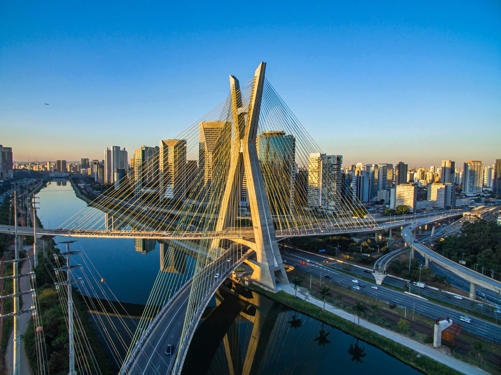
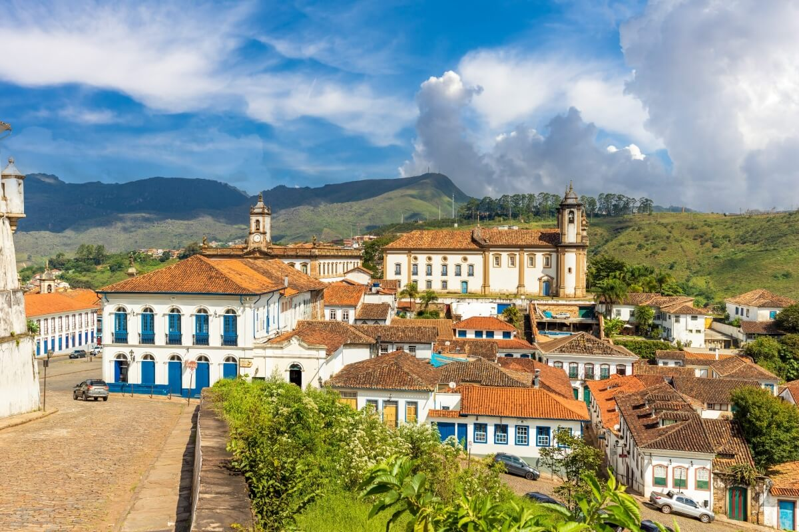

São Paulo é a maior cidade do Brasil e um dos principais centros econômicos do país. Com uma população enorme e uma vida agitada, a cidade se destaca pela diversidade cultural e pelos negócios, sendo um polo de inovação e serviços.

O Rio de Janeiro é famoso por suas belezas naturais, como o Cristo Redentor e suas praias icônicas. A cidade é um centro cultural vibrante, com forte tradição no samba, no carnaval e na música popular brasileira.

Minas Gerais é um estado com grande riqueza histórica e cultural, conhecido por suas cidades coloniais e pela deliciosa culinária mineira. Suas montanhas e cidades históricas atraem turistas que buscam uma viagem no tempo.

O Espírito Santo é um estado de paisagens deslumbrantes, com belas praias e clima agradável. Sua capital, Vitória, é cercada por montanhas e mar, e a culinária local, com frutos do mar, é um dos maiores encantos da região.